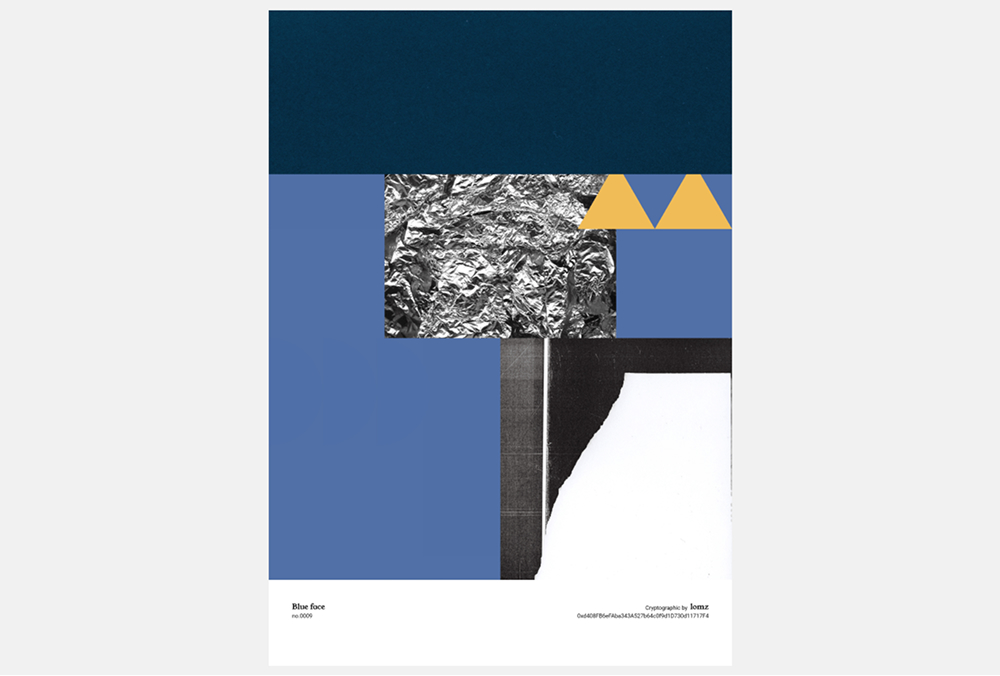
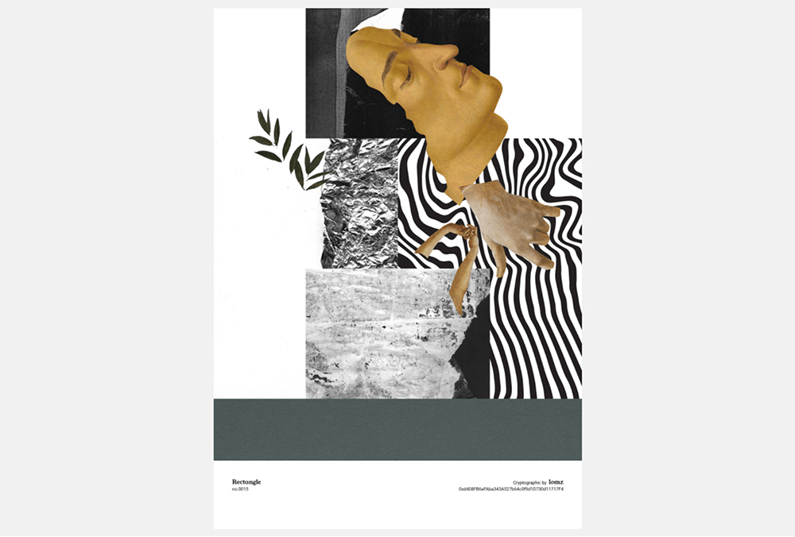
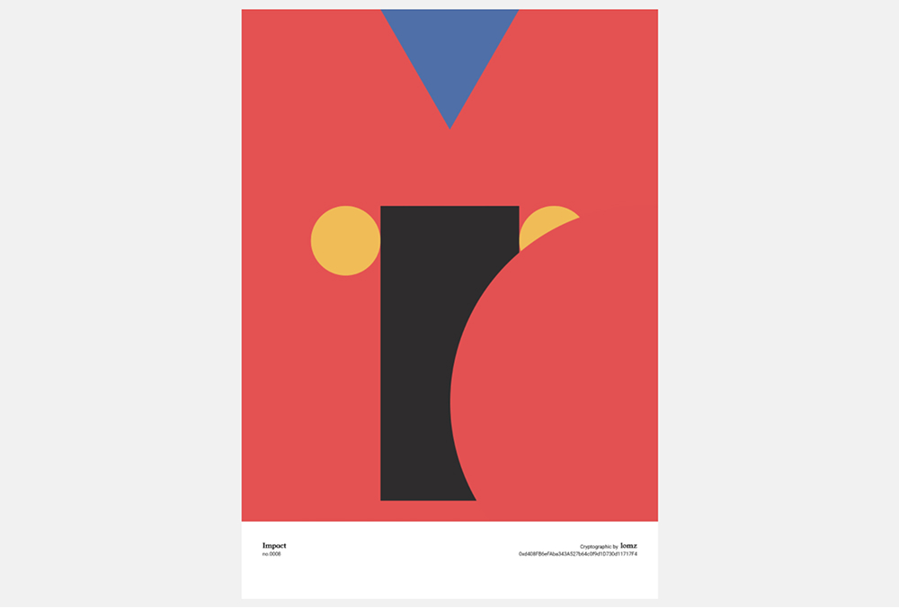
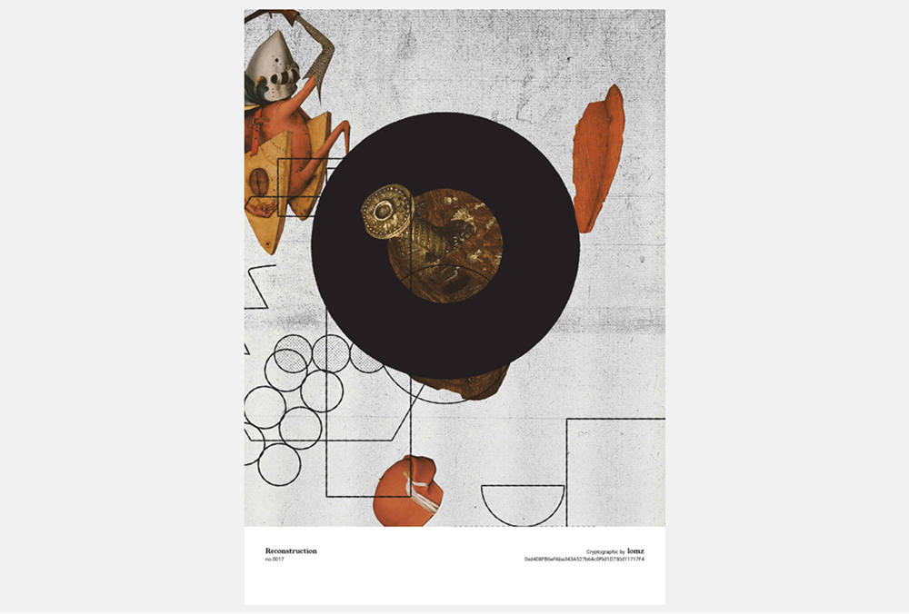
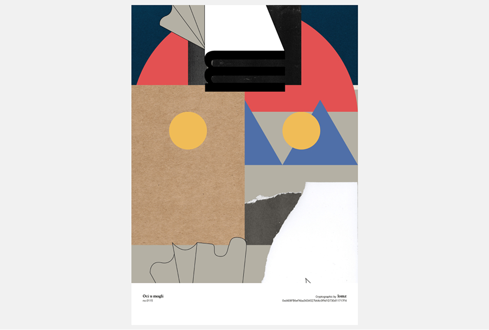
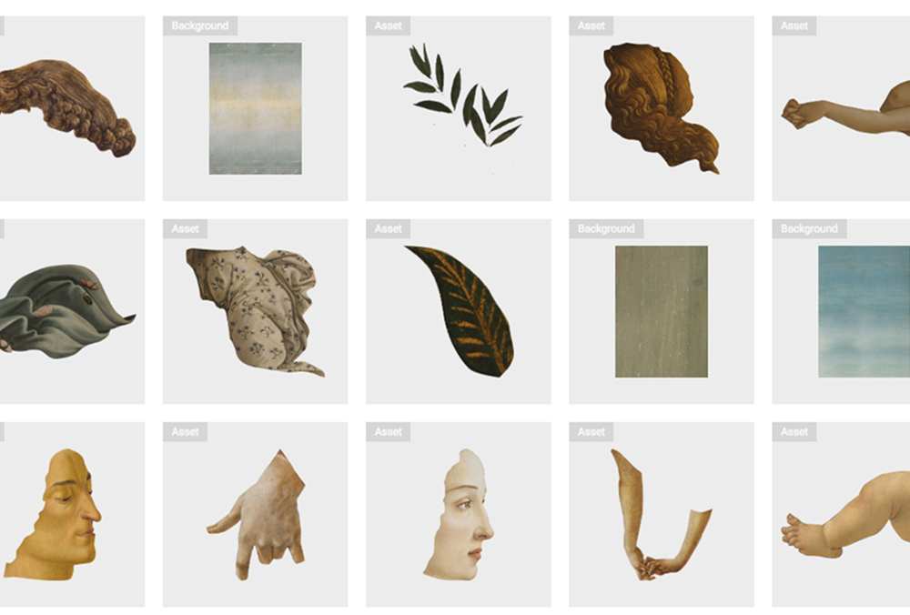
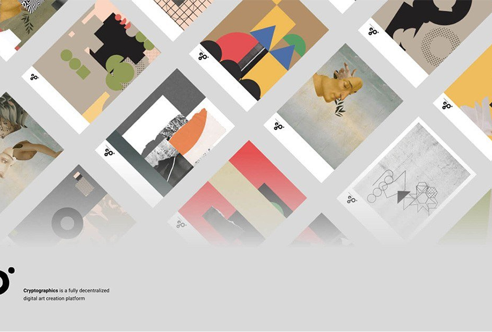

Cryptographics
Unique digital artwork on the Ethereum blockchain. Cryptographics is a digital artwork hub and print-generation tool powered by Ethereum and IPFS. It allows artists, creators and collectors to come together to sell assets, create Cryptographics and trade them. As a form, a Cryptographic is a unique fusion of cryptography, digital art and Web 3.0 — greatly inspired by the Dada avant-garde movement.
The Cryptographics project emerged from our love for digital art, passion for building innovative decentralized apps on Ethereum, and a special fondness for cryptography. We see it as an exploration of the ever-growing crypto-collectibles concept — although someone pointed out it can also be considered a prototype of IP management on the blockchain. But we wouldn't go quite that far.







